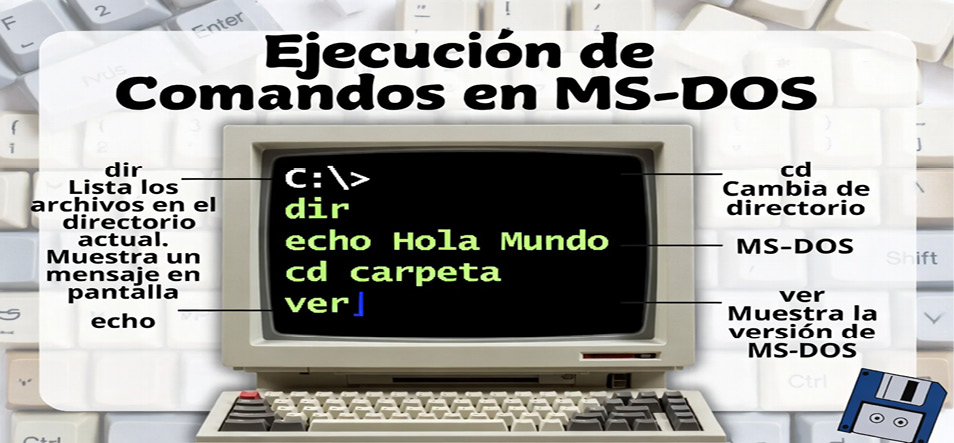
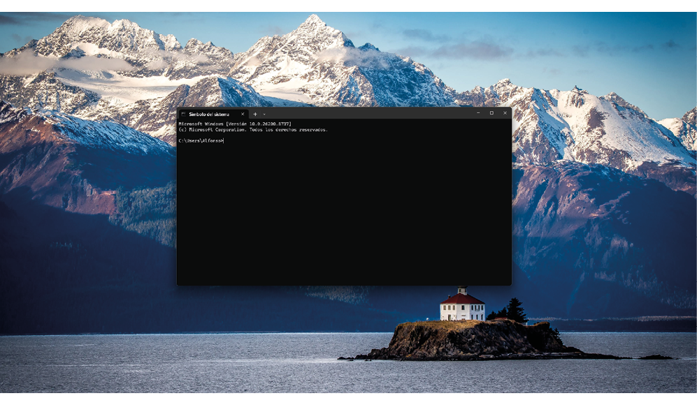
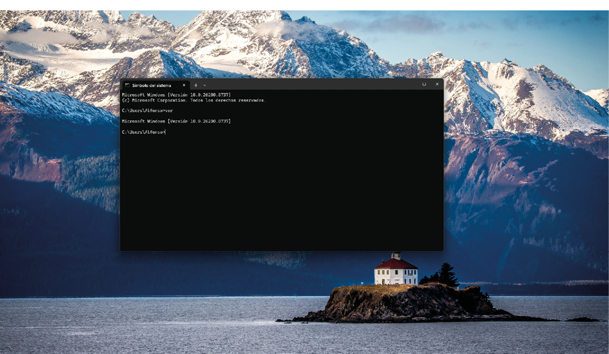
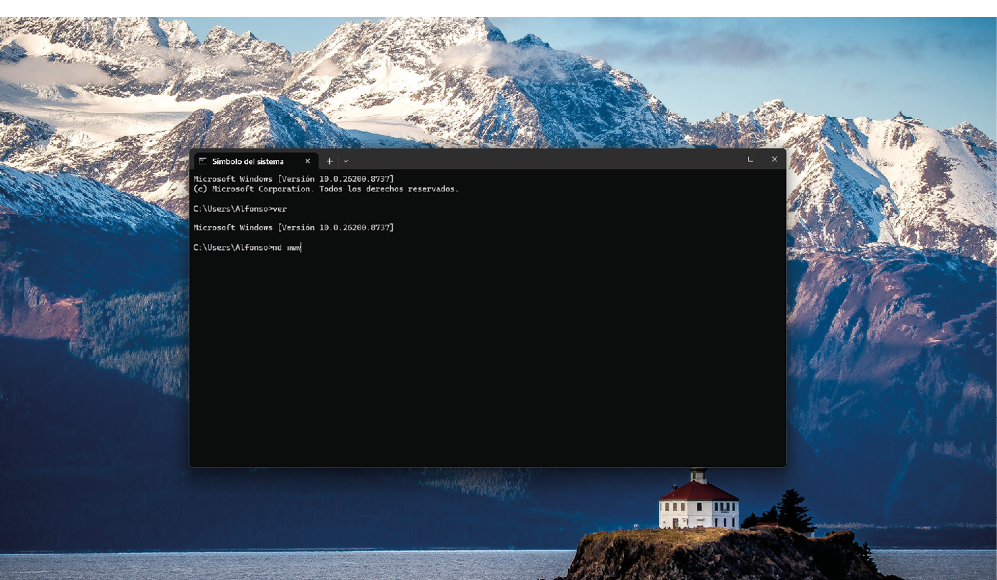
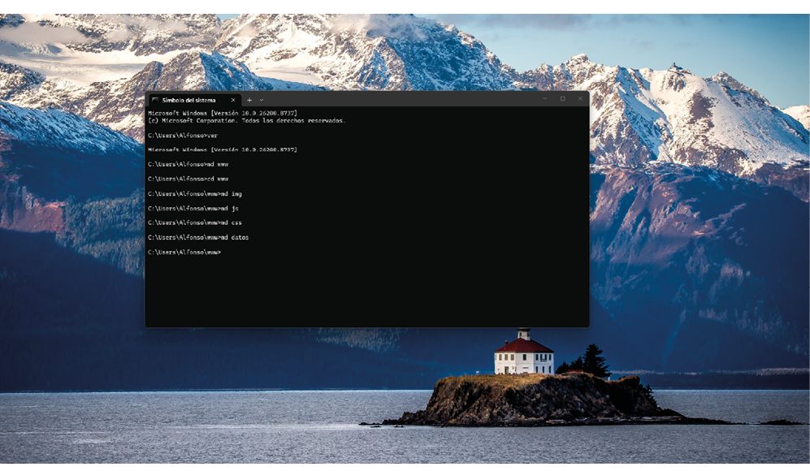
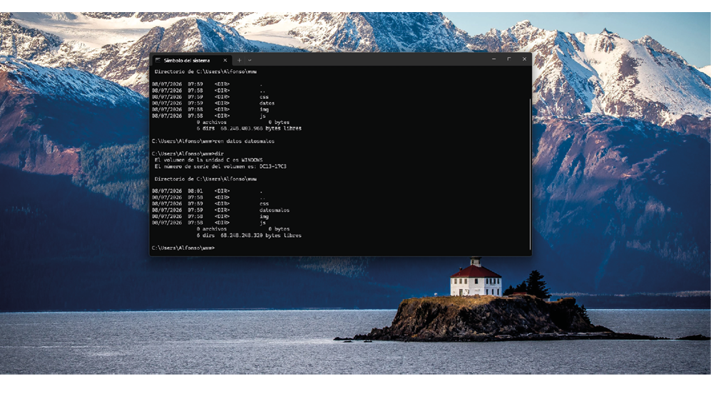
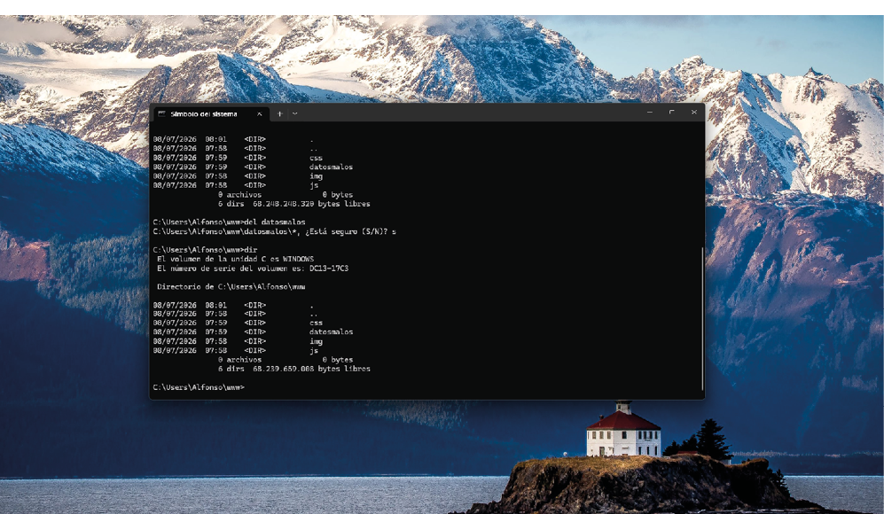
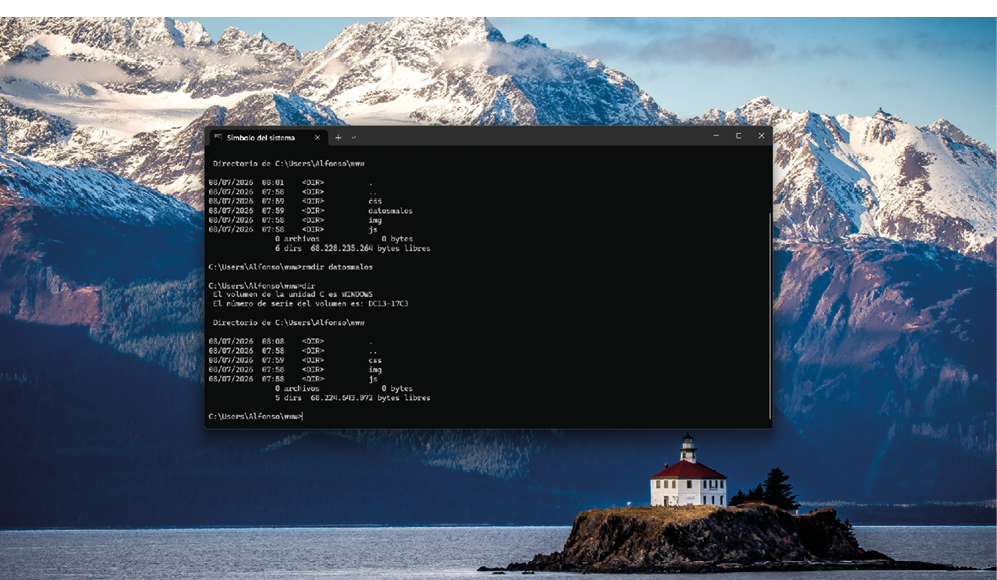
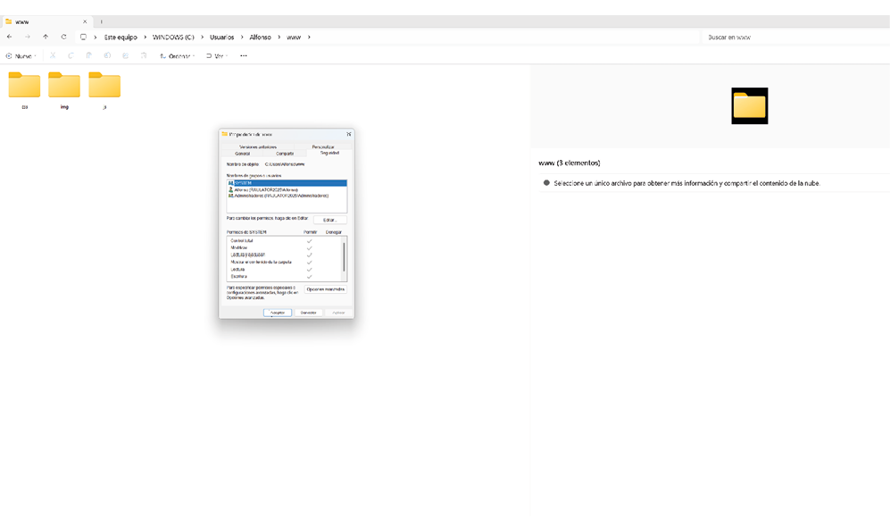

📁
Archivos y Recursos de la Actividad
Descarga los archivos originales asociados a esta actividad:
Módulo formativo: Publicación de páginas web (MF0952_2)
Actividad 2 - Caso práctico
Alfonso Rubio Rioseras
Julio 2026

Descarga los archivos originales asociados a esta actividad:
Pregunta 1. Desde un sistema operativo Windows, realice las siguientes acciones siempre trabajando desde la consola (Realice una captura de pantalla de cada apartado donde se vean las acciones realizadas):







